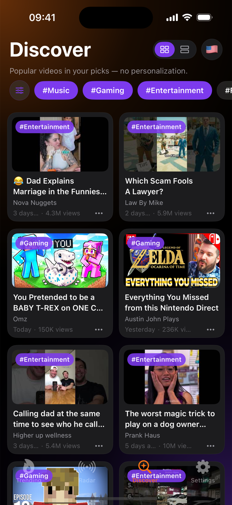
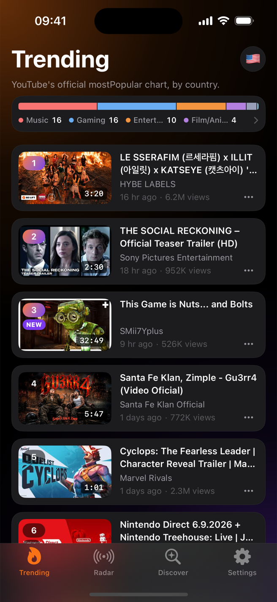

SCREENSIOS 17+
Here's what it actually looks like.



Open YouTube and the algorithm shows you videos picked just for you. Sidefeed shows you three rankings instead: Trending, the official chart for 12 countries; Radar, a ranking Sidefeed computes itself to catch risers the official chart hasn't picked up yet; and Discover, the most popular videos in each of 14 categories. Stop guessing your next video — check the data, then make it.

In July 2025, YouTube removed the Trending page from its own app. Inside YouTube, it's now even harder to see past your personal recommendations. But if you make a living from video, "what's rising right now" is still a number you need every single day. Sidefeed is where that number lives now.
“Everyone says 'ride the trend' when your channel stalls. Okay — where exactly do I see the trend?”
Your recommendations only show videos like the ones you already make. Skim Trending and Radar for one minute each morning, and you'll catch topics while the ▲ marks are still fresh — before everyone else starts copying them.
“What do I bring on Monday? Every. Single. Week.”
Flip through 12 country charts. If a format is climbing with ▲ in the US but hasn't reached your market's chart yet, that's your next pitch. Five minutes before the meeting is enough.
“I want one screen that shows what's working in this category right now.”
Check the top videos in any of 14 categories on Discover, and spot channels just taking off on Radar. The best time to propose a collab is before they hit the chart.
Tap the flag button and choose one of 12 countries — the US, Japan, Korea and more. You instantly see the videos people in that country are watching the most right now.
Every video carries a mark: ▲ means its rank went up in the last 6 hours, ▼ means it went down, NEW means it just entered the chart. Top Movers and the Radar tab gather the fastest climbers for you.
Tap a video and Sidefeed first shows how its rank has changed and how fast its views are growing. Save the useful ones to Watch Later — they sync through your own iCloud to both iPhone and iPad.
Anyone can see what's #1 today. The real signal is the video that was #18 six hours ago and is #3 now — that one is blowing up as you watch. Sidefeed saves the chart through the day and marks every video with exactly how its rank changed.
The official chart alone isn't enough. Radar — computed by Sidefeed itself — catches videos rising outside the chart, and Discover shows what's most popular in every one of 14 categories. All of it public data, so everyone sees the same screens: the actual trends, not an algorithm's guess.
The official YouTube popularity chart. Sidefeed adds 6-hour rank-change marks, a Top Movers row, and a bar showing which categories dominate right now.
Sidefeed's own ranking. It catches videos that are rising fast but haven't reached the official chart yet.
Popular videos sorted into 14 categories — music, gaming, comedy and more. No personalization, just what's actually popular.
Switch countries with one tap on the flag and compare. What's #1 in Tokyo right now?

You never sign in with Google, and your watch history is never used. That's the point: you see the same real ranking as everyone else, not a feed shaped around you.
Sidefeed's server saves the trending chart all day long. By comparing those saved copies, it can tell whether each video's rank went up or down — something the YouTube app itself never shows you.
Tapping a video doesn't throw you onto YouTube. You first see a small card with its current rank, 6-hour change and view speed — then you decide whether to open it on YouTube.
Only researching long videos? Flip one switch in Settings and Shorts disappear from every screen.
Save a video for reference and it shows up on your iPhone and iPad alike, synced through your own iCloud.
Block channels you don't want and dismiss videos you don't care about, so your research screen stays clean.
Free to download on iPhone & iPad.